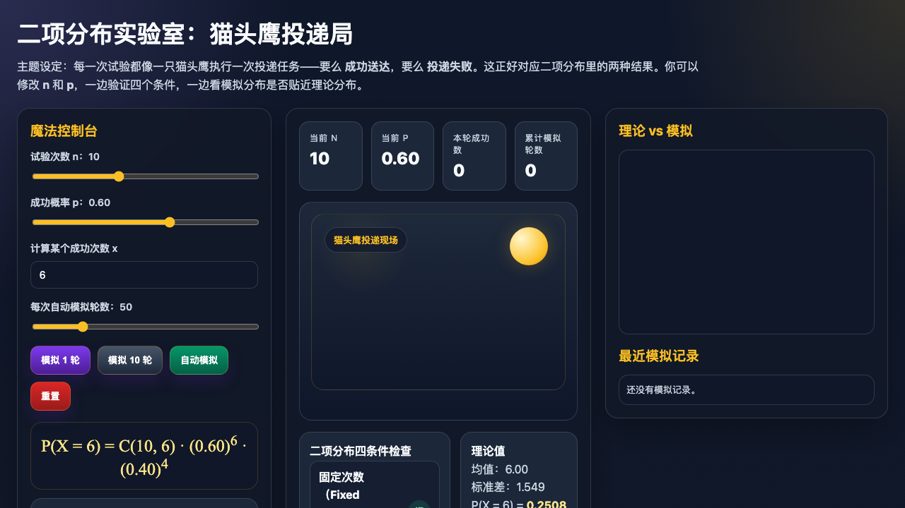
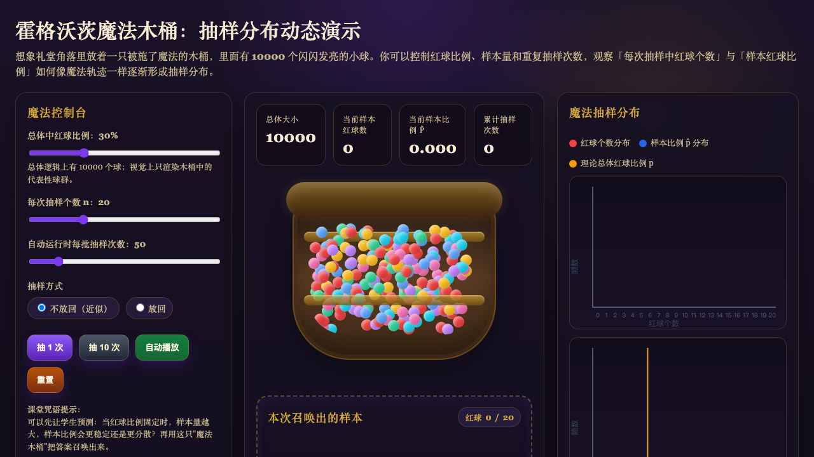

A classroom-friendly interactive page for introducing binomial settings, repeated trials, and how probability and sample size shape the distribution.

An interactive visualization for repeated sampling and sampling distributions, useful for helping students build intuition before formulas.